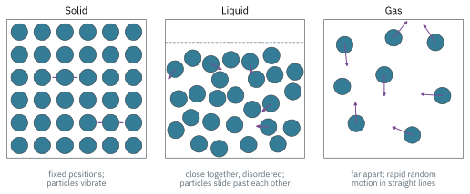
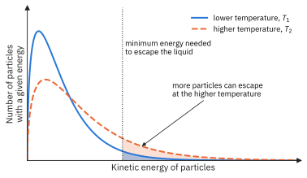
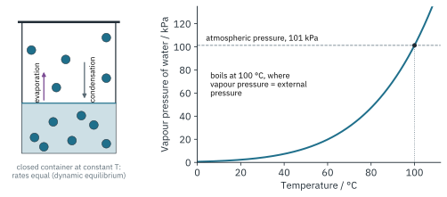
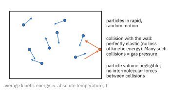
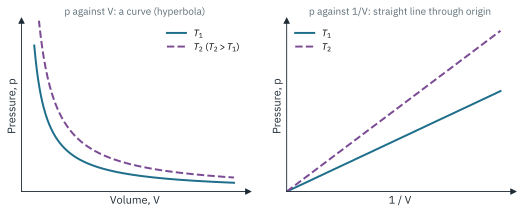
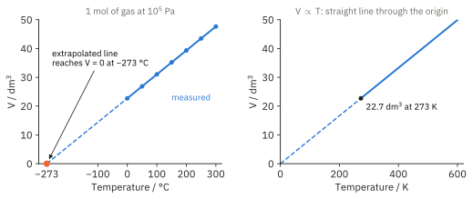
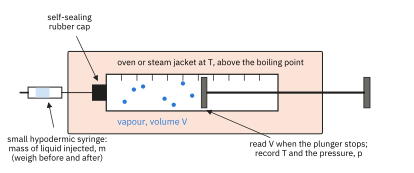

The Gaseous State 1
Topic 3 · The Gaseous State Part 1
On this page
Introduction
Although the physical processes of melting and boiling do not involve chemical changes, the forces holding the particles together still have to be overcome. It might be easier to view these processes, from solid to liquid to gas, as if the atoms or molecules become more and more discrete. In the solid state, the particles are held together in a fixed arrangement, forming a singular macro unit. In the gaseous state, this association no longer exists and the atoms and molecules are free to roam and move about.1

This topic is about the last of these states. We first build a simple model of a gas, the ideal gas, and use it to explain the gas laws and the ideal gas equation, pV = nRT. In Part 2 we see where the model breaks down, and why.
Changes of state


Once gaseous, the particles move rapidly and randomly through large amounts of space, changing direction only when they collide with other gas particles or with surfaces of one kind or another. When the surfaces are those of a container, it is bombardment by gas particles which is experienced as the gas's pressure. Gases are easily compressed because of all the space between one particle and another.
The kinetic theory of an ideal gas
In order to develop some of the theory used to describe the behaviour of gases, the characteristics of gases are idealised to such a degree that no real gas possesses them in absolutely full measure. The basic assumptions of the kinetic theory as applied to an ideal gas are:
- Gases consist of particles in rapid, random motion.
- The gas particles have negligible volume compared with the volume of the container (the space they occupy).
- There are no intermolecular forces of attraction or repulsion between the particles. In between collisions, the particles experience no forces from each other or from the walls of the container, so they move in straight lines.
- Collisions of gas particles with each other and with the walls of the container are perfectly elastic: there is no loss of total kinetic energy.
- The average kinetic energy of the particles is proportional to the absolute temperature (the temperature in kelvin).

These assumptions apply to all ideal gases, so it follows that the average kinetic energy of the particles of any gas at a given temperature is the same, whatever the gas. Since kinetic energy = ½mv2, heavier particles move more slowly on average at the same temperature.2
Avogadro, Boyle and Charles
Three experimental laws describe how the volume of a gas depends on the amount of gas, the pressure and the temperature. Each one holds the other two variables constant.
In kinetic theory terms: if the volume is halved at constant temperature, the particles move at the same average speed but there are twice as many of them in each unit of volume. They hit each unit area of the wall twice as often, so the pressure doubles.

In kinetic theory terms: when the temperature rises, the average kinetic energy rises and the particles move faster. They hit the walls harder and more often. For the pressure to stay the same, the gas must expand so that the collisions with each unit area of wall become less frequent.
It is by plotting volumes of gases against temperature that the absolute temperature scale is defined. If volume is plotted against temperature in °C and the plot extrapolated back, the graph predicts that gases have zero volume at approximately −273 °C (Fig 6, left). This suggests a natural absolute zero of temperature, and this is the basis of the Kelvin scale: T / K = θ / °C + 273.4 No real gas actually reaches zero volume; all of them liquefy and solidify long before.

The ideal gas equation
Combining the three laws, V ∝ n, V ∝ 1/p and V ∝ T, gives V ∝ nT/p, or
where R is a constant known as the molar gas constant (the universal gas constant). From the Data Booklet, R = 8.31 J K−1 mol−1. For R to have this value, every quantity must be in SI units:5
| Quantity | Symbol | SI unit | Common conversions |
|---|---|---|---|
| Pressure | p | pascal, Pa (= N m−2 = J m−3) | 1 kPa = 103 Pa; 1 atm = 101 325 Pa; 1 bar = 105 Pa |
| Volume | V | m3 | 1 dm3 = 10−3 m3; 1 cm3 = 10−6 m3 |
| Amount | n | mol | n = mass / M |
| Temperature | T | K | T / K = θ / °C + 273 |
For a fixed amount of gas (n constant), pV/T = nR is constant, so the three laws also combine into the general gas equation:
Here the units only need to be the same on both sides (kPa and dm3 are fine), but T must still be in kelvin.
Worked and explained examples
Example 1: using pV = nRT
A 2.50 dm3 steel cylinder contains 0.400 mol of nitrogen at 27 °C.
- Calculate the pressure in the cylinder.
- The cylinder is heated to 177 °C. Calculate the new pressure.
(To answer part (a), first convert everything to SI units.)
V = 2.50 dm3 = 2.50 × 10−3 m3; T = 27 + 273 = 300 K
p = nRT / V = (0.400 × 8.31 × 300) / (2.50 × 10−3) = 3.989 × 105 = 3.99 × 105 Pa (399 kPa)
(For part (b), n and V are fixed, so p ∝ T. There is no need to use R again.)
p2 = p1 × T2 / T1 = 3.989 × 105 × 450 / 300 = 5.98 × 105 Pa
Notice that the temperature in °C went up by a factor of 177/27 = 6.6, but the pressure only went up by a factor of 1.5, which is 450/300 in kelvin.
Determining the relative molecular mass of a gas or volatile liquid
Since n = m/M, where m is the mass of gas and M its molar mass (numerically equal to Mr), the ideal gas equation can be rearranged to find M:
so
If the density of the gas, ρ = m/V, is known instead, the same equation becomes M = ρRT/p.
The gas syringe method
For a volatile liquid, a small, accurately weighed mass is injected through a self-sealing cap into a gas syringe held in an oven or steam jacket at a temperature above the boiling point of the liquid (Fig 7). The liquid vaporises completely and pushes the plunger out. The volume of vapour, the temperature and the atmospheric pressure are recorded. The mass injected is found by weighing the small syringe before and after injection.

Example 2: Mr of a volatile liquid
0.200 g of a volatile liquid, X, was injected into a gas syringe at 100 °C. The vapour occupied 106 cm3 at a pressure of 101 kPa. X contains carbon, hydrogen and oxygen only. (Real data for a common solvent.)
- Calculate the relative molecular mass of X.
- Suggest a molecular formula and an identity for X.
(To answer part (a), convert to SI units, then use M = mRT/pV.)
V = 106 cm3 = 106 × 10−6 m3; p = 101 × 103 Pa; T = 100 + 273 = 373 K
So M = 57.9 g mol−1, and Mr of X is 57.9, i.e. about 58.
(For part (b), look for a C, H, O formula with Mr = 58.) C3H6O has Mr = 3(12.0) + 6(1.0) + 16.0 = 58.0. X is likely to be propanone, CH3COCH3 (a common, volatile solvent, boiling point 56 °C), or its isomer propanal.
Example 3: Mr from gas density
At s.t.p., a gaseous hydrocarbon has a density of 1.24 g dm−3. Find its Mr and suggest its identity. (Illustrative data.)
(At s.t.p., 1 mol occupies 22.7 dm3, so the mass of 1 mol is the mass of 22.7 dm3.)
M = ρ × Vm = 1.24 g dm−3 × 22.7 dm3 mol−1 = 28.1 g mol−1
A hydrocarbon of Mr ≈ 28 is ethene, C2H4 (Mr = 28.0). (Using M = ρRT/p with ρ = 1.24 kg m−3 gives the same answer, 28.1 g mol−1.)
Additional information
- For a giant structure, such as NaCl or diamond, melting and boiling do break bonds (ionic or covalent). For a simple molecular substance, only the intermolecular forces between molecules are overcome; the covalent bonds within the molecules are unchanged. ↩
- Beyond the syllabus: kinetic theory gives pV = ⅓Nm<c2>, where N is the number of particles and <c2> the mean square speed. Comparing this with pV = nRT shows that the average kinetic energy per particle is ½m<c2> = (3/2)(R/L)T, which is proportional to T and independent of m. ↩
- Older books give 22.4 dm3 mol−1 at s.t.p. That was for a standard pressure of 1 atm (101 325 Pa). The standard pressure is now 105 Pa (1 bar), which gives 22.7 dm3 mol−1. Some books use r.t.p. = 298 K, which gives 24.5 dm3 mol−1. Use the Data Booklet values unless a question gives you others. ↩
- More precisely, absolute zero is −273.15 °C. The Data Booklet and the examiners use 273. ↩
- 1 J = 1 N m and 1 Pa = 1 N m−2, so 1 Pa × 1 m3 = 1 N m = 1 J. That is why pV has the units of energy, and why R can be quoted in J K−1 mol−1. ↩